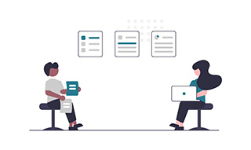

Skills
-

html/css
基本的なコーディングは可能、CSSは主にSassで記述。都度コメントを残し、わかりやすく無駄のないコーディングを心がけます。
動きのあるアニメーションやSEOの聴いたコーディング、また効率的かつスピーディな記述を習得中。 -

Photoshop
デザインカンプは主にPhotoshopで作成。基本的な操作は問題なし。レイヤーの整理、グループ化、色分けなど、わかりやすいレイヤー作成を心がけます。
ショートカットを駆使してより早く作成できる技術を習得中。 -
jQuery
アコーディオンやハンバーガーメニュー、ページ内移動などの記述は問題なし。
暗記はしておらず、細かな記述やオプション指定は都度調べて設定しているため、素早く効率の良い記述ができるよう精進しています。 -

WordPress
ローカルや本番環境の構築、基本的なプラグイン・テーマの設定は問題なし。
現在オリジナルテーマの作成方法(静的サイトのWordPress化など)を学習中。 -

Sass(scss)
CSSは基本的にSassで記述。入れ子や変数などの記述は問題なし。
mixinなどの機能は、現状の1人の学習ではあまり利点を感じず使用していないが、今後の効率化のために習得中。 -

next skill...
Can〜できること〜
-
コーディング
Webデザインデザインカンプをできるだけ忠実にコーディングし、Webサイトへ実装します。
また最終的な目的の達成のための、意味のあるWebデザインを行います。
最終的な目的とは、(実店舗への)集客・(LPからサイトへの)誘導・(知名度向上のための)広告などで、Webサイトはあくまでそれらを達成するツールという認識で制作します。
もちろん、「単に自分のWebサイトを持ちたい！」などの目的も大歓迎です。 -

ヒアリング
相手の「欲」を見抜く一言で言うと「聞き上手」、常に相手の話しやすいような応対を心がけ、伝えたいことをしっかり聞き出します。さらに、話忘れや「そういえば…」といった伝え切れていない要求を、「引き出しを少しだけ開ける」ようにきっかけを相手に与え、相手の心の引き出しをどんどん開けきってもらうように尽力します。
人には、自分では気づかない要求がたくさんあり、「その人が本当に欲していること」を気づかせてあげることも重要な役割だと感じています。 -
セルフスタート
自分の「欲」を伸ばす気になったこと、やってみたいことは自分からやり始めます。指示を待って言われたことだけをやるのではなく、「こうした方が効率が良いのでは」、「この方が喜ばれるのでは」など感じたことを提案し、相手の要求、自分の成長に繋げます。
ただ、「思ったことを勝手にやり出す」ことはしません。暴走と自走を区別して、きちんと周りを見ながら走り出します。